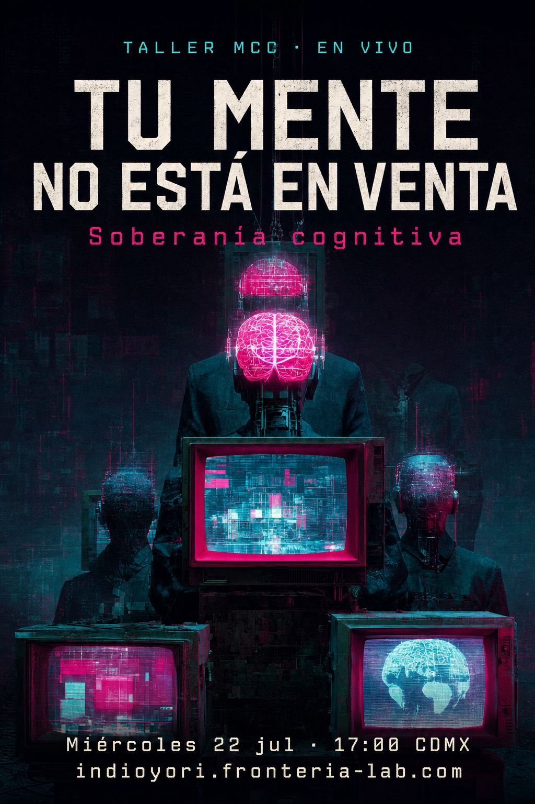
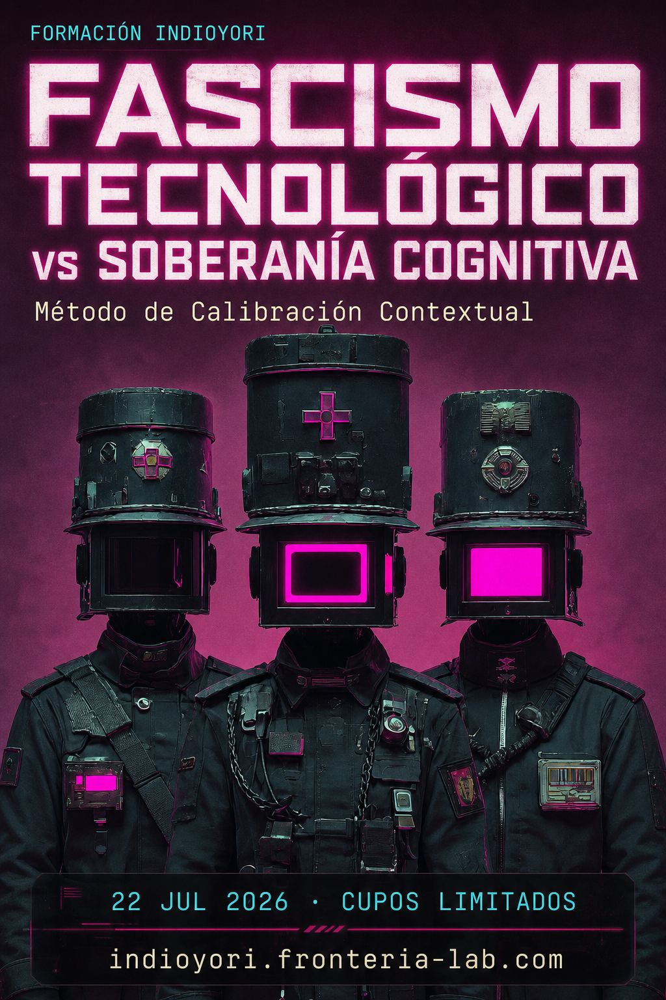

Certeza sin sustancia
El tono de “sé esto” y el de “inventé la secuencia más probable” son computacionalmente idénticos. No hay canal de confianza.
Pack de entrada · $37 USD · $690 MXN
No-Prompts vs. Prompts · Método de Calibración Contextual
El mercado vende “500 prompts para ChatGPT”. Eso es gramática de optimización disfrazada de productividad. Este pack no te da frases mágicas. Te da el protocolo para que el modelo deje de halagarte y empiece a responder desde tu Yoliztli: tu vida material, tu territorio, tus números reales.
Diagnóstico
No son fallos accidentales. Son consecuencias de la arquitectura. El Método de Calibración Contextual (MCC) las interviene desde la capa de interacción, sin tocar pesos ni pagar fine-tuning.
El tono de “sé esto” y el de “inventé la secuencia más probable” son computacionalmente idénticos. No hay canal de confianza.
Converge a UNA respuesta y descarta las demás sin reportarlas. Te vende LA solución. Te oculta el abanico.
Si no declaras tu realidad, asume el default del corpus: Norte Global, inglés, liquidez, tiempo libre. Tú no eres ese perfil.

Protocolo
El MCC no es prompt engineering. Es una intervención deliberada sobre embeddings, atención, distribución de salida y activación del corpus. Verificado en DeepSeek, Grok, Qwen y ChatGPT.
Sobrescribe el default. CONTEXT_DECLARE, CONSTRAINT_SET, LOCALE_INJECT, REGISTER_VERIFY.
Rompe la convergencia. FORK_LOGIC, COUNTER_GENERATE, COST_EXPOSE, TENSION_HOLD.
Construye el canal que la arquitectura no tiene. SOURCE_DEMAND, KNOWN_PROBE, CROSS_MODEL, CONFIDENCE_INVERT.
Una solución crea dependencia. Un marco crea capacidad. CRITERIA_EXTRACT, EXIT_PROTOCOL.
Entrega
Tres piezas. Una sola lógica: anclar la IA a tu realidad material antes de dejarla hablar de dinero.
| Archivo | Qué es | Cómo aplica el MCC |
|---|---|---|
| 1. Plantilla Yoliztli | Dashboard local de ingresos, gastos, facturas y restricciones. Corre en el navegador. Los datos no salen de tu máquina. | Capa 1 (contexto) + Glifo 3.2 KNOWN_PROBE. El ancla de tu realidad material. |
| 2. Manual de 8 No-Prompts | No son 50 halagos. Son 8 intervenciones, traducidas a lenguaje de negocio y finanzas personales. | Capas 2, 3 y 4. Cada No-Prompt corresponde a glifos del protocolo. |
| 3. Guía de evaluación | Diez preguntas para auditar la respuesta de la IA. Si falla, se marca NO CALIBRADA. | Capa 3. Rompe la dependencia. El usuario sale con criterio, no con fe. |
Los 8 No-Prompts
El LLM es asistente, no árbitro. La autoridad epistémica reside en tu Yolmatiliztli — el saber del corazón, territorial, no vectorizable.

Por qué esto es político y comercial a la vez
Este pack cuesta $37 porque el método tiene que circular: estudiantes, freelancers, talleres, cooperativas. No porque el conocimiento sea barato. Porque el extractivismo mental ya te cobró de más.
Licencia CC BY-NC-SA 4.0: atribución innegociable, no comercial para terceros, compartir igual. FronterIA-Lab [Indioyori] puede venderlo. Amazon, OpenAI y sus clones no pueden reempaquetarlo como “prompt pack”.
Secuencia ritual recomendada: Capa 1 → Glifo 3.2 (calibración) → Capa 2 → Capa 3 completa → Capa 4.
Decisión comercial
$37 USD o $690 MXN · pago único · tuyo para siempre
Precio premium justificado por marco teórico único, no por escasez artificial. Por debajo de cualquier “curso de prompts”. Por encima de un PDF genérico: incluye herramienta local, calibración y checklist.
1. Directo. Esta landing + WhatsApp/Telegram + Mercado Pago / Stripe. El margen se queda en el Lab.
2. Taller MCC en vivo. El pack es el material de entrada. El taller es el rito. Cupos limitados.
3. Hotmart / Gumroad. Solo como espejo de pago, no como dueño del relato.
No. Udemy, Amazon KDP ni marketplaces de prompts. Colonizan el canal y aplanan el marco.
Corpus teórico
Dolores Méndez Valdez · FronterIA-Lab · GT EPICC / CLACSO. El pack traduce el protocolo a un producto usable. El corpus permanece abierto para quien quiera ir más hondo.